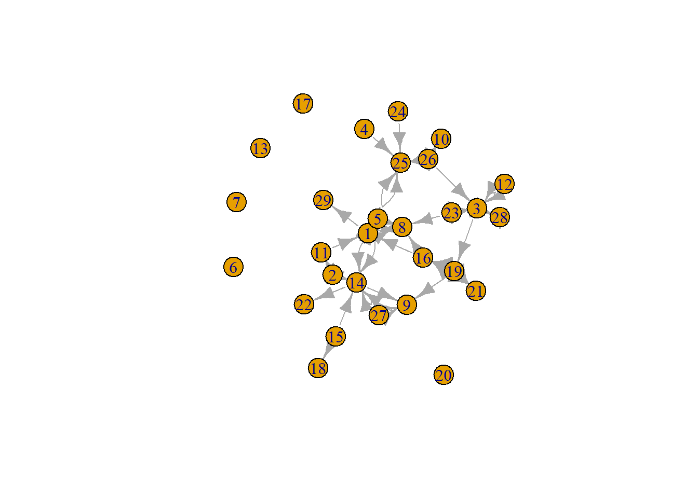

rm(list = ls())
packages = c("RSiena", "tidyverse", "stringdist", "stringi", "dplyr", "stringr")
library(magrittr)
library(tidyverse)## Warning: package 'tidyverse' was built under R version 4.2.3## Warning: package 'ggplot2' was built under R version 4.2.3## Warning: package 'tibble' was built under R version 4.2.3## Warning: package 'tidyr' was built under R version 4.2.3## Warning: package 'readr' was built under R version 4.2.3## Warning: package 'purrr' was built under R version 4.2.3## Warning: package 'dplyr' was built under R version 4.2.3## Warning: package 'stringr' was built under R version 4.2.2## Warning: package 'forcats' was built under R version 4.2.3## Warning: package 'lubridate' was built under R version 4.2.3## ── Attaching core tidyverse packages ─────────────────────────── tidyverse 2.0.0 ──
## ✔ dplyr 1.1.3 ✔ readr 2.1.4
## ✔ forcats 1.0.0 ✔ stringr 1.5.0
## ✔ ggplot2 3.4.3 ✔ tibble 3.2.1
## ✔ lubridate 1.9.2 ✔ tidyr 1.3.0
## ✔ purrr 1.0.2
## ── Conflicts ───────────────────────────────────────────── tidyverse_conflicts() ──
## ✖ tidyr::extract() masks magrittr::extract()
## ✖ dplyr::filter() masks stats::filter()
## ✖ dplyr::lag() masks stats::lag()
## ✖ purrr::set_names() masks magrittr::set_names()
## ℹ Use the conflicted package (<http://conflicted.r-lib.org/>) to force all conflicts to become errorslibrary(stringr)
library(RSiena)## Warning: package 'RSiena' was built under R version 4.2.3library(stringdist)## Warning: package 'stringdist' was built under R version 4.2.2##
## Attaching package: 'stringdist'
##
## The following object is masked from 'package:tidyr':
##
## extract
##
## The following object is masked from 'package:magrittr':
##
## extractlibrary(stringi)## Warning: package 'stringi' was built under R version 4.2.2library(dplyr)
library(stringr)
library(igraph)## Warning: package 'igraph' was built under R version 4.2.2##
## Attaching package: 'igraph'
##
## The following objects are masked from 'package:lubridate':
##
## %--%, union
##
## The following objects are masked from 'package:dplyr':
##
## as_data_frame, groups, union
##
## The following objects are masked from 'package:purrr':
##
## compose, simplify
##
## The following object is masked from 'package:tidyr':
##
## crossing
##
## The following object is masked from 'package:tibble':
##
## as_data_frame
##
## The following objects are masked from 'package:stats':
##
## decompose, spectrum
##
## The following object is masked from 'package:base':
##
## unionlibrary(statnet)## Warning: package 'statnet' was built under R version 4.2.3## Loading required package: tergm## Warning: package 'tergm' was built under R version 4.2.3## Loading required package: ergm## Warning: package 'ergm' was built under R version 4.2.3## Loading required package: network## Warning: package 'network' was built under R version 4.2.3##
## 'network' 1.18.1 (2023-01-24), part of the Statnet Project
## * 'news(package="network")' for changes since last version
## * 'citation("network")' for citation information
## * 'https://statnet.org' for help, support, and other information
##
##
## Attaching package: 'network'
##
## The following objects are masked from 'package:igraph':
##
## %c%, %s%, add.edges, add.vertices, delete.edges, delete.vertices,
## get.edge.attribute, get.edges, get.vertex.attribute, is.bipartite,
## is.directed, list.edge.attributes, list.vertex.attributes,
## set.edge.attribute, set.vertex.attribute
##
##
## 'ergm' 4.5.0 (2023-05-27), part of the Statnet Project
## * 'news(package="ergm")' for changes since last version
## * 'citation("ergm")' for citation information
## * 'https://statnet.org' for help, support, and other information
##
## 'ergm' 4 is a major update that introduces some backwards-incompatible
## changes. Please type 'news(package="ergm")' for a list of major
## changes.
##
## Loading required package: networkDynamic## Warning: package 'networkDynamic' was built under R version 4.2.3##
## 'networkDynamic' 0.11.3 (2023-02-15), part of the Statnet Project
## * 'news(package="networkDynamic")' for changes since last version
## * 'citation("networkDynamic")' for citation information
## * 'https://statnet.org' for help, support, and other information
##
## Registered S3 method overwritten by 'tergm':
## method from
## simulate_formula.network ergm
##
## 'tergm' 4.2.0 (2023-05-30), part of the Statnet Project
## * 'news(package="tergm")' for changes since last version
## * 'citation("tergm")' for citation information
## * 'https://statnet.org' for help, support, and other information
##
##
## Attaching package: 'tergm'
##
## The following object is masked from 'package:ergm':
##
## snctrl
##
## Loading required package: ergm.count## Warning: package 'ergm.count' was built under R version 4.2.3##
## 'ergm.count' 4.1.1 (2022-05-24), part of the Statnet Project
## * 'news(package="ergm.count")' for changes since last version
## * 'citation("ergm.count")' for citation information
## * 'https://statnet.org' for help, support, and other information
##
## Loading required package: sna## Warning: package 'sna' was built under R version 4.2.3## Loading required package: statnet.common## Warning: package 'statnet.common' was built under R version 4.2.3##
## Attaching package: 'statnet.common'
##
## The following object is masked from 'package:ergm':
##
## snctrl
##
## The following objects are masked from 'package:base':
##
## attr, order
##
## sna: Tools for Social Network Analysis
## Version 2.7-1 created on 2023-01-24.
## copyright (c) 2005, Carter T. Butts, University of California-Irvine
## For citation information, type citation("sna").
## Type help(package="sna") to get started.
##
##
## Attaching package: 'sna'
##
## The following objects are masked from 'package:igraph':
##
## betweenness, bonpow, closeness, components, degree, dyad.census,
## evcent, hierarchy, is.connected, neighborhood, triad.census
##
## Loading required package: tsna## Warning: package 'tsna' was built under R version 4.2.3##
## 'statnet' 2019.6 (2019-06-13), part of the Statnet Project
## * 'news(package="statnet")' for changes since last version
## * 'citation("statnet")' for citation information
## * 'https://statnet.org' for help, support, and other information
##
## unable to reach CRANfpackage.check <- function(packages) {
lapply(packages, FUN = function(x) {
if (!require(x, character.only = TRUE)) {
install.packages(x, dependencies = TRUE)
library(x, character.only = TRUE)
}
})
}
fsave <- function(x, file = NULL, location = "./data/processed/") {
ifelse(!dir.exists("data"), dir.create("data"), FALSE)
ifelse(!dir.exists("data/processed"), dir.create("data/processed"), FALSE)
if (is.null(file))
file = deparse(substitute(x))
datename <- substr(gsub("[:-]", "", Sys.time()), 1, 8)
totalname <- paste(location, datename, file, ".rda", sep = "")
save(x, file = totalname) #need to fix if file is reloaded as input name, not as x.
}
fload <- function(filename) {
load(filename)
get(ls()[ls() != "filename"])
}
fshowdf <- function(x, ...) {
knitr::kable(x, digits = 2, "html", ...) %>%
kableExtra::kable_styling(bootstrap_options = c("striped", "hover")) %>%
kableExtra::scroll_box(width = "100%", height = "300px")
}
# this is the most important one. We created it in the previous script
f_pubnets <- function(df_scholars = df, list_publications = publications, discip = "sociology", affiliation = "RU",
waves = list(wave1 = c(2017, 2018, 2019), wave2 = c(2020, 2021, 2022))) {
publications <- list_publications %>%
dplyr::bind_rows() %>%
dplyr::distinct(title, .keep_all = TRUE)
df_scholars %>%
dplyr::filter(affil1 == affiliation | affil2 == affiliation) %>%
dplyr::filter(discipline == discip) -> df_sel
networklist <- list()
for (wave in 1:length(waves)) {
networklist[[wave]] <- matrix(0, nrow = nrow(df_sel), ncol = nrow(df_sel))
}
publicationlist <- list()
for (wave in 1:length(waves)) {
publicationlist[[wave]] <- publications %>%
filter(gs_id %in% df_sel$gs_id) %>%
filter(year %in% waves[[wave]]) %>%
dplyr::select(author) %>%
lapply(str_split, pattern = "," )
}
publicationlist2 <- list()
for (wave in 1:length(waves)) {
publicationlist2[[wave]] <- publicationlist[[wave]]$author %>%
# lowercase
lapply(tolower) %>%
# Removing diacritics
lapply(stri_trans_general, id = "latin-ascii") %>%
# only last name
lapply(word, start = -1, sep = " ") %>%
# only last last name
lapply(word, start = -1, sep = "-")
}
for (wave in 1:length(waves)) {
# let us remove all publications with only one author
remove <- which(sapply(publicationlist2[[wave]], FUN = function(x) length(x) == 1) == TRUE)
publicationlist2[[wave]] <- publicationlist2[[wave]][-remove]
}
for (wave in 1:length(waves)) {
pubs <- publicationlist2[[wave]]
for (ego in 1:nrow(df_sel)) {
# which ego?
lastname_ego <- df_sel$lastname[ego]
# for all publications
for (pub in 1:length(pubs)) {
# only continue if ego is author of pub
if (lastname_ego %in% pubs[[pub]]) {
aut_pot <- which.max(pubs[[pub]] %in% lastname_ego)
# only continue if ego is first author of pub
if (aut_pot == 1) {
# check all alters/co-authors
for (alter in 1:nrow(df_sel)) {
# which alter
lastname_alter <- df_sel$lastname[alter]
if (lastname_alter %in% pubs[[pub]]) {
networklist[[wave]][ego, alter] <- networklist[[wave]][ego, alter] + 1
}
}
}
}
}
}
}
return(list(df = df_sel, network = networklist))
}df <- fload("./Data/Data_processed/totaldata.rda")
publications <- fload("./Data/Data_processed/20230621list_publications_jt.rda")
output <- f_pubnets(df_scholars = df, list_publications = publications, discip = "sociology", affiliation = "RU",
waves = list(wave1 = c(2017, 2018, 2019), wave2 = c(2020, 2021, 2022)))
df_soc <- output[[1]]
df_network <- output[[2]]In this paper, I use a combination of datasets that have been acquired through the process of webscraping. I combined the datasets that was the output of the webscraping tutorial in the Social Network Analysis for Social Scientists book (Tolsma and Hofstra 2022) with the webscraped data that was the output of the Sunbelt 2023 workshop on webscraping (n.d.). These datasets were subsequently merged based on Google Scholar ID’s to combine the data of the researchers. Thereafter, only researchers from the sociology department of the Radboud University in Nijmegen were kept in the dataset.
In order to be able to answer the research questions, there is a need for data. For this paper, I make use of a technique called ‘webscraping’. Webscraping is a process by which a researcher collects data from the internet. In order to acquire these webscraped data, I have used the ‘Scholar’ package in R. This package allows for the gathering of information on publications, co-authors and citations of scientists. With this R-package, I scraped the information of the sociology staff of the Radboud University, where the starting point was the researchers’ first and family name. This information was then entered in Google Scholar to retract information on the publications, co-authors and citations of these researchers. This was done with the help of the ‘Scholar’ package in R. Furthermore, only researchers with multi-author papers were selected for this paper. This lead to information of twenty-nine researchers affiliated to the Radboud University being included in the final sample (N=29).
In this paper I will look at the composition of the publication network in two waves. In wave 1, the publication network of 2017, 2018 and 2019 is created. In the second wave, the publications of 2020, 2021 and 2022 are added to the network. Unlike other types of social networks, such as friendship networks, it is highly unlikely for a tie to be removed, as that would mean that the paper has to be retracted.
Each wave therefore gives information on whether researchers have collaborated for a paper in certain years. After deciding on which years to ascribe to which waves, I turned the waves into an adjacency matrix, where a ‘1’ indicates that two researchers have published together, and a ‘0’ indicates that researchers have not (yet) published a paper together. As the network is based on co-publications, and it is unknown who initiated the paper as there are multiple possibilities for the placement of the ‘initiator’, the ties are undirected.
As said before, there are 29 researchers in the Radboud University Sociology department, with 71 ties between staff of the department, leading to an average of around 2,5 ties per researcher (2.448276). Furthermore, the density of the network is really low (0.08743842), indicating that there are a lot of potential ties not made.
net1 <- df_network[[1]]
diag(net1) <- 0
g1 <- graph_from_adjacency_matrix(net1)
plot(g1)ecount(g1)## [1] 70vcount(g1)## [1] 29edgelistwave1 <- data.frame(net1)
edgeswave1 <- as.matrix(edgelistwave1, rownames.force = TRUE) # matrix because igraph wants that
# Remove rows with negative node IDs
edgeswave1 - min(edgeswave1) + 1## X1 X2 X3 X4 X5 X6 X7 X8 X9 X10 X11 X12 X13 X14 X15 X16 X17 X18 X19 X20 X21
## 1 1 1 1 1 1 1 1 6 1 1 6 1 1 1 1 1 1 1 1 1 1
## 2 1 1 3 1 1 1 1 1 1 1 2 1 1 4 1 1 1 1 1 1 1
## 3 1 1 1 1 1 1 1 1 1 1 1 1 1 1 1 1 1 1 1 1 1
## 4 1 1 1 1 1 1 1 1 1 1 1 1 1 1 1 1 1 1 1 1 1
## 5 1 1 1 1 1 1 1 1 1 1 1 1 1 3 1 1 1 1 1 1 1
## 6 1 1 1 1 1 1 1 1 1 1 1 1 1 1 1 1 1 1 1 1 1
## 7 1 1 1 1 1 1 1 1 1 1 1 1 1 1 1 4 1 1 1 1 1
## 8 1 1 1 1 1 1 1 1 1 1 2 1 1 1 1 1 1 1 1 1 1
## 9 1 1 1 1 1 1 1 1 1 1 2 1 1 5 1 1 1 1 1 1 1
## 10 1 1 1 1 1 1 1 3 1 1 1 1 1 9 1 11 1 1 1 1 7
## 11 1 1 1 1 1 1 1 1 1 1 1 1 1 1 1 1 1 1 1 1 2
## 12 1 1 1 1 1 1 1 1 1 1 1 1 1 1 1 1 1 1 1 1 1
## 13 1 1 1 1 1 1 1 1 1 1 1 1 1 1 1 1 1 1 1 1 1
## 14 1 1 1 1 1 1 1 1 3 1 1 1 1 1 1 1 1 1 1 1 1
## 15 1 1 1 1 1 1 1 1 1 1 1 1 1 3 1 1 1 1 1 1 1
## 16 1 1 1 1 1 1 1 1 1 1 1 1 1 1 1 1 1 1 1 1 1
## 17 1 1 1 1 1 1 1 1 1 1 1 1 1 1 1 1 1 1 1 1 1
## 18 1 1 1 1 1 1 1 1 1 1 1 1 1 1 1 1 1 1 1 1 1
## 19 1 1 2 1 1 1 1 1 1 1 1 1 1 1 1 1 1 1 1 1 1
## 20 1 1 1 1 1 1 1 1 1 1 1 1 1 1 1 1 1 1 1 1 1
## 21 1 1 1 1 1 1 1 1 1 1 1 1 1 1 1 1 1 1 1 1 1
## 22 1 1 1 1 1 1 1 1 1 1 1 1 1 1 1 1 1 1 1 1 1
## 23 1 1 1 1 1 1 1 1 1 1 1 1 1 1 1 1 1 1 1 1 1
## 24 1 1 1 1 1 1 1 1 1 1 1 1 1 1 1 1 1 1 2 1 1
## 25 1 1 1 1 1 1 1 1 1 1 1 1 1 1 1 1 1 1 1 1 1
## 26 1 1 1 1 1 1 1 1 1 1 1 1 1 1 1 1 1 1 1 1 1
## 27 1 1 1 1 1 1 1 1 1 1 1 1 1 1 1 1 1 1 1 1 1
## 28 1 1 3 1 1 1 1 2 1 1 1 1 1 1 1 1 1 1 1 1 1
## 29 1 1 1 1 1 1 1 1 1 1 1 1 1 3 1 1 1 1 1 1 1
## X22 X23 X24 X25 X26 X27 X28 X29
## 1 1 1 1 1 1 1 1 1
## 2 1 1 1 1 1 1 1 1
## 3 1 1 1 1 1 1 1 1
## 4 1 1 1 1 1 1 1 1
## 5 1 1 1 1 1 1 1 1
## 6 1 1 1 1 1 1 1 1
## 7 1 1 1 1 1 1 1 1
## 8 1 1 1 1 1 1 1 1
## 9 1 1 1 4 1 1 1 1
## 10 1 1 1 1 1 1 1 1
## 11 1 1 1 1 1 1 1 1
## 12 1 1 1 1 1 1 1 1
## 13 1 1 1 1 1 1 1 1
## 14 3 1 1 1 1 1 1 1
## 15 1 1 1 1 1 1 1 1
## 16 1 1 1 1 1 1 1 1
## 17 1 1 1 1 1 1 1 1
## 18 1 1 1 1 1 1 1 1
## 19 1 1 1 1 1 1 1 1
## 20 1 1 1 1 1 1 1 1
## 21 1 1 1 1 1 1 1 1
## 22 1 1 1 1 1 1 1 1
## 23 1 1 1 1 1 1 1 1
## 24 1 1 1 1 1 1 1 1
## 25 1 1 1 1 1 1 1 1
## 26 1 1 1 1 1 1 1 1
## 27 1 1 1 1 1 1 1 1
## 28 1 1 1 1 1 1 1 1
## 29 1 1 1 1 1 1 1 1df_soc$RID <- 1:nrow(df_soc)
onlyRU1 <- left_join(edgelistwave1, df_soc[, c("RID", "gender.y")], by = c ("X1" = "RID"))
onlyRU1 <- left_join(onlyRU1, df_soc[, c("RID", "gender.y")], by = c ("X2" = "RID"))net2 <- df_network[[2]]
diag(net2) <- 0
g2 <- graph_from_adjacency_matrix(net2)
plot(g2)
ecount(g2)## [1] 71vcount(g2)## [1] 29edgelistwave2 <- data.frame(net2)
edgeswave2 <- as.matrix(edgelistwave2, rownames.force = TRUE) # matrix because igraph wants that
# Remove rows with negative node IDs
edgeswave2 - min(edgeswave2) + 1## X1 X2 X3 X4 X5 X6 X7 X8 X9 X10 X11 X12 X13 X14 X15 X16 X17 X18 X19 X20 X21
## 1 1 1 1 1 1 1 1 3 1 1 1 1 1 1 1 1 1 1 1 1 1
## 2 1 1 1 1 1 1 1 1 1 1 5 1 1 7 1 1 1 1 1 1 1
## 3 1 1 1 1 1 1 1 1 1 1 1 1 1 1 1 1 1 1 2 1 1
## 4 1 1 1 1 1 1 1 1 1 1 1 1 1 1 1 1 1 1 1 1 1
## 5 3 1 1 1 1 1 1 3 1 1 1 1 1 3 1 1 1 1 1 1 1
## 6 1 1 1 1 1 1 1 1 1 1 1 1 1 1 1 1 1 1 1 1 1
## 7 1 1 1 1 1 1 1 1 1 1 1 1 1 1 1 1 1 1 1 1 1
## 8 2 1 1 1 1 1 1 1 1 1 1 1 1 1 1 1 1 1 1 1 1
## 9 1 1 1 1 1 1 1 1 1 1 1 1 1 1 1 1 1 1 1 1 1
## 10 1 1 1 1 1 1 1 1 1 1 1 1 1 1 1 1 1 1 1 1 1
## 11 2 1 1 1 1 1 1 1 1 1 1 1 1 1 1 1 1 1 1 1 1
## 12 1 1 3 1 1 1 1 1 1 1 1 1 1 1 1 1 1 1 1 1 1
## 13 1 1 1 1 1 1 1 1 1 1 1 1 1 1 1 1 1 1 1 1 1
## 14 1 1 1 1 1 1 1 1 2 1 1 1 1 1 1 1 1 1 1 1 1
## 15 1 1 1 1 1 1 1 1 1 1 1 1 1 2 1 1 1 2 1 1 1
## 16 2 1 1 1 1 1 1 2 1 1 1 1 1 1 1 1 1 1 1 1 1
## 17 1 1 1 1 1 1 1 1 1 1 1 1 1 1 1 1 1 1 1 1 1
## 18 1 1 1 1 1 1 1 1 1 1 1 1 1 1 1 1 1 1 1 1 1
## 19 1 1 1 1 1 1 1 1 2 1 1 1 1 1 1 4 1 1 1 1 5
## 20 1 1 1 1 1 1 1 1 1 1 1 1 1 1 1 1 1 1 1 1 1
## 21 1 1 1 1 1 1 1 1 1 1 1 1 1 1 1 1 1 1 1 1 1
## 22 1 1 1 1 1 1 1 1 1 1 1 1 1 1 1 1 1 1 1 1 1
## 23 1 1 3 1 1 1 1 2 1 1 1 1 1 1 1 1 1 1 1 1 1
## 24 1 1 1 1 1 1 1 1 1 1 1 1 1 1 1 1 1 1 1 1 1
## 25 1 1 1 1 1 1 1 1 1 1 1 1 1 1 1 1 1 1 1 1 1
## 26 1 1 2 1 1 1 1 1 1 7 1 1 1 1 1 1 1 1 1 1 1
## 27 1 1 1 1 1 1 1 1 3 1 1 1 1 3 1 1 1 1 1 1 1
## 28 1 1 5 1 1 1 1 1 1 1 1 1 1 1 1 1 1 1 1 1 1
## 29 1 1 1 1 1 1 1 1 1 1 1 1 1 1 1 1 1 1 1 1 1
## X22 X23 X24 X25 X26 X27 X28 X29
## 1 1 1 1 1 1 1 1 2
## 2 1 1 1 1 1 1 1 1
## 3 1 2 1 1 1 1 3 1
## 4 1 1 1 2 1 1 1 1
## 5 1 1 1 3 1 1 1 1
## 6 1 1 1 1 1 1 1 1
## 7 1 1 1 1 1 1 1 1
## 8 1 1 1 1 1 1 1 1
## 9 1 1 1 1 1 1 1 1
## 10 1 1 1 1 1 1 1 1
## 11 1 1 1 1 1 1 1 1
## 12 1 1 1 1 1 1 1 1
## 13 1 1 1 1 1 1 1 1
## 14 2 1 1 1 1 1 1 1
## 15 1 1 1 1 1 1 1 1
## 16 1 1 1 1 1 1 1 1
## 17 1 1 1 1 1 1 1 1
## 18 1 1 1 1 1 1 1 1
## 19 1 1 1 1 1 1 1 1
## 20 1 1 1 1 1 1 1 1
## 21 1 1 1 1 1 1 1 1
## 22 1 1 1 1 1 1 1 1
## 23 1 1 1 1 1 1 1 1
## 24 1 1 1 2 1 1 1 1
## 25 1 1 1 1 1 1 1 1
## 26 1 1 1 9 1 1 1 1
## 27 1 1 1 1 1 1 1 1
## 28 1 1 1 1 1 1 1 1
## 29 1 1 1 1 1 1 1 1df_soc$RID <- 1:nrow(df_soc)
onlyRU2 <- left_join(edgelistwave2, df_soc[, c("RID", "gender.y")], by = c ("X1" = "RID"))
onlyRU2 <- left_join(onlyRU2, df_soc[, c("RID", "gender.y")], by = c ("X2" = "RID"))sdegree <- igraph::degree(g1)
sdegree2 <- igraph::degree(g2)
#par(mfrow=c(3,1))
hist(sdegree, col="#99d6ff")table(sdegree)## sdegree
## 0 1 2 3 5 6 7 9 10 13 25 26
## 10 1 5 3 1 1 1 2 2 1 1 1hist(sdegree2, col="#99d6ff")table(sdegree2)## sdegree2
## 0 1 2 4 5 6 7 8 9 10 12 13 15
## 5 5 2 4 2 2 1 2 1 1 1 2 1As can be concluded from the histograms above, the degree of the scientific collaboration network of the RU Sociology staff is right-skewed, meaning that there are a lot of researchers that have not published with many others in the department. This right-skewedness of the degree is less prevalent in the second wave than in the first, meaning that there are more (new) co-publications between researchers from the sociology department in the second wave (2020-2022) compared to the first wave (2017-2019).
igraph::dyad.census(g1)## $mut
## [1] 1
##
## $asym
## [1] 22
##
## $null
## [1] 383igraph::triad.census(g1)## [1] 3089 158 352 11 23 12 5 3 1 0 0 0 0 0 0
## [16] 0igraph::edge_density(g1)## [1] 0.0862069igraph::dyad.census(g2)## $mut
## [1] 3
##
## $asym
## [1] 27
##
## $null
## [1] 376igraph::triad.census(g2)## [1] 2914 314 359 14 21 18 6 4 1 0 1 2 0 0 0
## [16] 0igraph::edge_density(g2)## [1] 0.08743842In the first wave there are 22 dyads, with an edge density of 0.185. This means that the number of actual edges in the networks is relatively low compared to the potential maximum number of edges that could exist in the network. In the second wave, there are 27 dyads, which is an increase of five dyads. Contrastingly, the edge density did not increase that much. In the second wave, the edge density is 0.190. Regarding triad census (Davis and Leinhardt 1967), in both waves of there are no complete triads. In both waves, the most frequent triad is the ‘003’-triad, which means that there are no connections between three researchers. In both waves the ‘102’-triad is most frequent, despite a decrease in total number of this kind of ‘triad’. The ‘012’-triad is the most created type of triad between wave 1 and wave 2. In wave 2, this kind of triad occurs 149 times more than in wave 1.
transitivity(g1)## [1] 0.05263158transitivity(g2)## [1] 0.1232877Transitivity effects show whether co-authors of co-authors also become co-authors of the ego. There is a clear difference in transitivity between the two waves. In the first wave, transitivity is 0.053, meaning that if an ego is connected to alter 1 and alter 2, the probability of these two alters publishing together is 5,3%. In the second wave this probability has increased to 0.123.
In this paper, I will be looking at whether the co-author network composition looks different for men than for women, more specifically on whether men prefer collaborating more with men than women prefer working with women more. However, in order to gain useful insights into these collaborations, I need information on specific information on the actors in the network. For example, I need to know the gender of the researcher. In the sociology department of the Radboud University, there are 15 men (51,7%) active and 14 women (48,3%).
df$genderman <- NA
# fill category by category
df$genderman[df$gender.y == "man" ] <- 1
df$genderman[df$gender.y == "woman" ] <- 0
table(df$genderman)##
## 0 1
## 14 15In order to be able to answer the first research question, I also need information on the gender of the scientist is found in the variable ‘genderman’, where men are coded with ‘1’ and women with ‘0’. In this dataset, there are 15 men and 14 women. In order to see whether scientists prefer working with people of the same gender, I computed a variable that shows the percentage of collaborators of the same gender as the ego (gendersimilar, percentageww, percentagemm).
The data shows that in the second wave, there is more gender equality in the scientific collaboration network of the Sociology staff of the Radboud University. In the first wave, on average, 84,9% of a researchers’ collaborators had the same gender as the ego. This percentage was 60% for women and 98,1% for men. In the second wave, on average 70.8% of a researchers’ collaborators had the same sex as the ego, with 59,8% of collaborators for female researchers also being women, where the percentage of same gender collaborators for men drops to 89,5%.
df_soc$RID <- 1:nrow(df_soc)
# safer way to get columns by name
rid_gender_column_names <- grep("RID|gender", names(df_soc), value = TRUE)
print(rid_gender_column_names)## [1] "gender.x" "gender.y" "genderman" "RID"onlyRU <- dplyr::left_join(edgelistwave1, df_soc[, rid_gender_column_names], by = c("X1" = "RID"))
onlyRU <- dplyr::left_join(onlyRU, df_soc[, rid_gender_column_names], by = c("X2" = "RID"))
onlyRU$gendersimilar <- NA
onlyRU$gendersimilar[onlyRU$gender.y.x == "man" & onlyRU$gender.y.y == "man"] <- 1
onlyRU$gendersimilar[onlyRU$gender.y.x == "woman" & onlyRU$gender.y.y == "woman"] <- 1
onlyRU$gendersimilar[onlyRU$gender.y.x == "man" & onlyRU$gender.y.y == "woman" ] <- 0
onlyRU$gendersimilar[onlyRU$gender.y.x == "woman" & onlyRU$gender.y.y == "man" ] <- 0
summary(onlyRU$gendersimilar)## Min. 1st Qu. Median Mean 3rd Qu. Max. NA's
## NA NA NA NaN NA NA 29onlyRU$percentageww <- NA
onlyRU$percentageww[onlyRU$gender.y.x == "woman" & onlyRU$gender.y.y == "man"] <- 0
onlyRU$percentageww[onlyRU$gender.y.x == "woman" & onlyRU$gender.y.y == "woman"] <- 1
onlyRU$percentageww[onlyRU$gender.y.x == "man" & onlyRU$gender.y.y == "man"] <- NA
onlyRU$percentageww[onlyRU$gender.y.x == "man" & onlyRU$gender.y.y == "woman"] <- NA
summary(onlyRU$percentageww)## Min. 1st Qu. Median Mean 3rd Qu. Max. NA's
## NA NA NA NaN NA NA 29onlyRU$percentagemm <- NA
onlyRU$percentagemm[onlyRU$gender.y.x == "man" & onlyRU$gender.y.y == "man"] <- 1
onlyRU$percentagemm[onlyRU$gender.y.x == "man" & onlyRU$gender.y.y == "woman"] <- 0
onlyRU$percentagemm[onlyRU$gender.y.x == "woman" & onlyRU$gender.y.y == "man"] <- NA
onlyRU$percentagemm[onlyRU$gender.y.x == "woman" & onlyRU$gender.y.y == "woman"] <- NA
summary(onlyRU$percentagemm)## Min. 1st Qu. Median Mean 3rd Qu. Max. NA's
## NA NA NA NaN NA NA 29onlyRU2$gendersimilar2 <- NA
onlyRU2$gendersimilar2[onlyRU2$X1 == onlyRU2$X2] <- 1
summary(onlyRU2$gendersimilar2)## Min. 1st Qu. Median Mean 3rd Qu. Max. NA's
## 1 1 1 1 1 1 4onlyRU2$percentageww2 <- NA
onlyRU2$percentageww2[onlyRU2$gender.y.x == "man" & onlyRU2$gender.y.y == "man"] <- NA
onlyRU2$percentageww2[onlyRU2$gender.y.x == "woman" & onlyRU2$gender.y.y == "woman"] <- 1
onlyRU2$percentageww2[onlyRU2$gender.y.x == "man" & onlyRU2$gender.y.y == "woman" ] <- NA
onlyRU2$percentageww2[onlyRU2$gender.y.x == "woman" & onlyRU2$gender.y.y == "man" ] <- 0
summary(onlyRU2$percentageww2)## Min. 1st Qu. Median Mean 3rd Qu. Max. NA's
## NA NA NA NaN NA NA 29onlyRU2$percentagemm2 <- NA
onlyRU2$percentagemm2[onlyRU2$gender.y.x == "man" & onlyRU2$gender.y.y == "man"] <- 1
onlyRU2$percentagemm2[onlyRU2$gender.y.x == "woman" & onlyRU2$gender.y.y == "woman"] <- NA
onlyRU2$percentagemm2[onlyRU2$gender.y.x == "man" & onlyRU2$gender.y.y == "woman" ] <- 0
onlyRU2$percentagemm2[onlyRU2$gender.y.x == "woman" & onlyRU2$gender.y.y == "man" ] <- NA
summary(onlyRU2$percentagemm2)## Min. 1st Qu. Median Mean 3rd Qu. Max. NA's
## NA NA NA NaN NA NA 29Finally, in order to be able to test hypothesis 3, I look at the amount of published papers by a researcher. As noted earlier, RU Sociology staff without publications have been removed from the sample. As a result, the least amount of papers published by any of the Sociology staff is 2 papers, whereas the person with the most papers has published 465 papers. By looking at the histogram of the amount of published papers, we can conclude that this person is an outlier. However, this person, along with another researcher with 435 publications, heavily influence the average number of publications, which is 75.84. In this case, it might be more telling to look at the median number of papers, which is 25.
summary(df$num_pubs)## Min. 1st Qu. Median Mean 3rd Qu. Max.
## 2.00 10.00 23.00 77.69 93.00 465.00hist(df$num_pubs)Something that could play a role in explaining why people would like to work with others is the amount of experience they have. Besides the number of published papers, experience can also be expressed as the number of years someone has been in academia for. Not only do people who have been longer in academia more opportunities to publish papers, it could also be that because of their longer presence in academia leads to the perception that those who have been active in academia for longer have more knowledge on their research topics. This might lead to the more senior researchers getting more requests for collaborations, or creating more opportunities for new papers. Information on how long someone has been in academia has been stored in the variable ‘career_age’. By looking at the descriptive statistics, the average length of academic careers in the dataset is 14 years and 3 months, with the shortest academic career being two years and the longest 51.
summary(df$career_age)## Min. 1st Qu. Median Mean 3rd Qu. Max.
## 2.00 6.00 10.00 14.34 18.00 51.00table(df$career_age)##
## 2 3 4 5 6 8 9 10 14 15 16 18 19 22 26 32 35 51
## 1 3 2 1 2 2 1 3 4 1 1 1 1 1 1 1 2 1hist(df$career_age)Not only could the number of years in academia potentially influence the way the network of co-authorship develops, it may be that the number of co-authors in general influences the way networks develop. Based on this dataset, the minimum number of co-authors is 0, and the highest number of co-authors is 75, averaging at 12,29. As those who have been in academia for longer have had a longer period of time to potentially collaborate on a paper, therefore it is interesting to look at the correlation between these variables. As you can see below, there is a strong correlation between the number of years in academia and the number of co-authors of 0.76. A slightly lower correlation is found between the number of publications and the number of co-authors (r=.63).
summary(df$num_coauth)## Min. 1st Qu. Median Mean 3rd Qu. Max.
## 0.00 0.00 6.00 13.14 16.00 75.00hist(df$num_coauth)cor(df$career_age, df$num_coauth)## [1] 0.7707394cor(df$num_coauth, df$num_pubs)## [1] 0.6343139All these control variables, as well as the number of publications, are ratio level measurements, therefore the ‘absDiffx’-effect will be tested. This effect tests whether researchers prefer to collaborate with other researchers who score similarly on the variable of interest.
For the different research questions, I will use different strategies to analyse the data. The first, descriptive, research question I will present more descriptive statistics, focussing on differences per wave and between gender. Thereafter, these statistics will be used to compare within and between effects. Important descriptive network characteristics that I show are transitivity, degree and the dyad census.
In order to be able to anwer my explanatory research question, I use a different strategy: the RSiena package in R. With this package, I am able to analyze longitudinal data simulating network outcomes based on the perspective of the nodes (Ripley et al. (2023)). This simulation of the network is based on the logic of SOAM (Stochastic Actor Oriented Model). This logic starts from the idea that actors perform ‘ministeps’. The logic of ‘ministeps’ entails that one randomly selected actor has the opportunity to make a tie change, or don’t change anything about their network. Once the first actor has made their choice on whether to make or break a tie, or made the decision not change anything in their network, the next randomly selected actor has a chance to alter their network. Before deciding on a potential change in ties, egos evaluate all potential options available to them. The values of the network are determined in the evaluation function, where one can set specific values for the degree and and reciprocity. Based on these values, the actor then decides on what is the most attractive network outcome for themselves. After this decision, it is the turn of the next actor to follow the same steps and make a decision on what they want to do as their ‘ministep’. As these ministeps are all sequential, but non-deterministic, it is required that there are many simulations of the decisions of actors. Estimates for evaluation are provided by the model.
In order to draw conclusions, I will estimate a number of models. In the first model, I will only estimate structural network effects for the publication network. First, the degree effect estimates the number of outdegrees, which are in this case the number of connections with other researchers in the sociology department of the Radboud University. The degree effect can be understood as the intercept. Furthermore, the transitive triplets effect shows whether researchers have a preference to close a triad (prefering a transitive relation), in this case prefer to work with another researcher who has already worked with one of their own co-authors. Activity and popularity effects are added to assess whether researchers prefer to write a paper (create a tie) with researchers who already have a lot of co-authors. Thereafter, in the second model, I add the interaction between the gender of the ego and the gender of the alter, therefore assessing whether researchers prefer to collaborate with other researchers who share the same gender, this effect will be tested with the sameX. Then I will estimate a model where I include all the control variables.